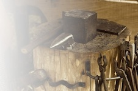
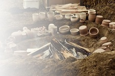
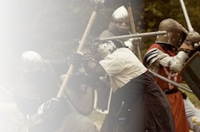
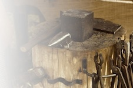
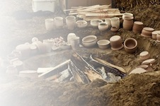
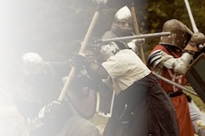
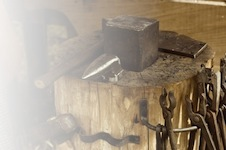
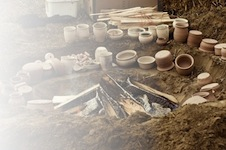
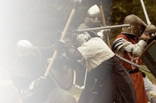

For most issues, you should talk to the Seneschal, who is the president of the local branch. Eoforwic’s seneschal is Lord Willmar Grimsdyke (Mark Alden).
The Chatelaine is responsible for helping new members. Eoforwic’s chatelaine is Magistra Nicolaa de Bracton (Susan Carroll-Clark).
The Marshal is in charge on Armoured combat activities, including practices. Our marshal is Lord James MacDonald of Eoforwic (Chris Beer).
For anything related to the Web Site, contact the Web Minister, Lord Angus Albani.


